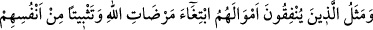
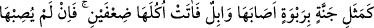
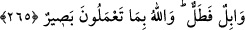

Mâşûktan başka ne varsa hepsini yakar.
İlâhî aşk ve Rahmânî sevgi, kulun kalbini kuşatınca ondaki mal, nefs ve evlâd
konularındaki şirk damarları kesilir, Allah adamına ücretle hizmet etmek yakışmaz.
Mevlâsını kerîm gören kişi, gönlünü ücret düşüncesinden ve karşılık alma kaygısından
uzaklaştırır. Kendisine amelinin karşılığı olan ecir ve ücret Kerîm olan Allah’dan
kemâliyle gelir. Hâfız der ki:
Sen kulluğu işçiler gibi ücret karşılığı yapma!
Değilse Hakk Teâlâ kulunu besleme yolunu bilir.
Allah’ım, bizim senden başkasından beklentilerimizi ve ümidlerimizi kes. Bizi ancak
senin zâtına tâlib olanlardan eyle!
265. Allah’ın rızasını kazanmak ve ruhlarındaki cömertliği kuvvetlendirmek için
mallarını hayra sarfedenlerin durumu, bir tepede kurulmuş güzel bir bahçeye
benzer ki, üzerine bol yağmur yağmış da iki kat ürün vermiştir. Bol yağmur
yağmasa bile bir çisinti düşer (de yine ürün verir). Allah, yaptıklarınızı görmektedir.
Âyette söz konusu edilen kimseler mallarını, sırf Allah’ın rızâsını kazanmak ve
nefislerini mal sevgisi ve cimrilik gibi kötü hasletlerden temizleyerek onu îmâna ve
itâata sevkedebilmek için harcayanlardır. Gerçi nefisler mal sevgisi ile bezenmiştir. Ve
bedenî ibâdetler ona güç gelir. Ancak gereken tedbirleri almak suretiyle onu bu halden
kurtarmak mümkündür.
Kasîde-i Bürde sâhibi böyle demektedir:
Nefis çocuk gibidir. Onu serbest bırakırsan süt emmek ister.
Eğer onu sütten kesersen o da artık süt istemez olur.
Eğer ona fırsat verirsen tembelliğe, başıboşluğa ve cimriliğe alışır. Mal toplar ve onu
îmânın gerektirdiği şekilde Allah yolunda harcayamaz. Eğer onu birtakım mâlî ve
bedenî ibâdetleri yapmaya zorlar ve bu ibâdetlerin zorluğuna katlanmaya mecbûr
edersen, sana boyun eğdiğini ve yaratılışında var olan birtakım âdetlerinden soyunup
temizlendiğini görürsün.
Şayet, nasıl nefsin bir parçası olan malı infâk etmek sûretiyle tâat nefsin tâati olur ve
onun îmânını güçlendirir,” dersen; derim ki: Nefsin mal ile aşırı derecede içli dışlı
olması sebebiyle mal ondan bir cüz sayılır. “Mal canın yongasıdır.” Her kim malını,
Allah rızâsı için verirse nefsinin bir kısmını iman üzere kuvvetlendirmiş olur. Hem